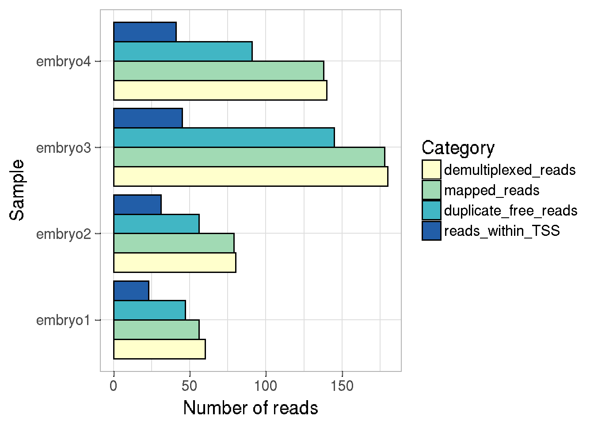
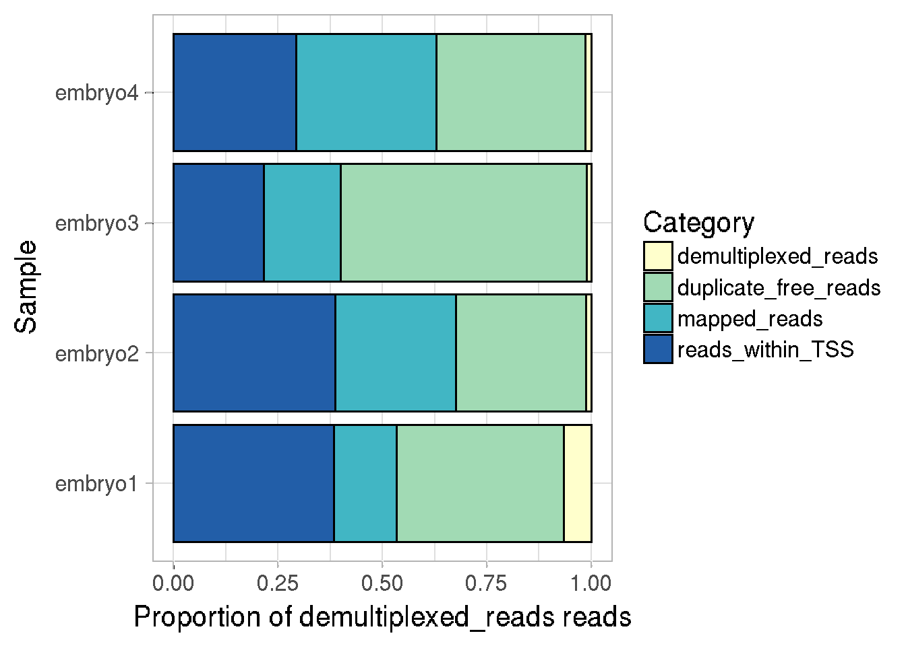
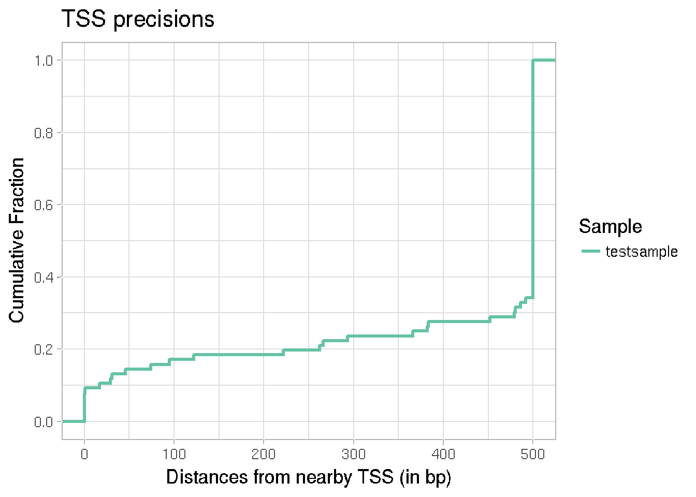
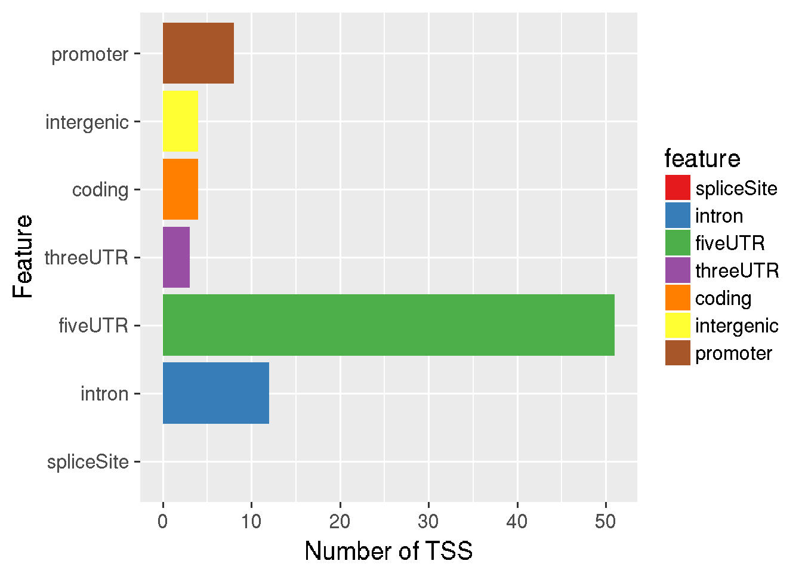

vignettes/mapcap_analysis.Rmd
mapcap_analysis.RmdAbstract
Transcript 5’-profiling techniques detect 5’ sites of the expressed transcripts in the genome, allowing us to detect transcription start sites in the genome at high resolution. CAGE (Cap Analysis of Gene Expression) is one such technique. Programs for analysis of CAGE data use the clustering of CAGE tags (CTSS) to annotate transcription start sites and detect promoter shifts. Recently, faster and more efficient 5’-profiling techniques have been developed which allow early sample multiplexing, removal of PCR duplicates using random barcodes, and use paired-end sequencing. icetea can be used to process such data. It also implements a new method for detection of transcription start sites based on local enrichment of genomic windows, that can take advantage of biological replicates. It further allows users to perform differential expression analysis of transcription start sites between groups of samples, therefore integrating transcript annotation and expression analysis. While icetea analysis is mostly useful for multiplexed, paired-end experiments with replicates, conventional CAGE data can also be analysed. icetea analysis compliments other programs that perform promoter profiling and expression analysis based on clusteing of CAGE tags.
Here we show the usability of icetea in the analysis of data from a recently developed paired-end, multiplexed 5’-profiling protocol called MAPCap. MAPCap (Multiplexed Affinity Purification of Capped RNA) allows fast and accutate detection of transcription start sites and expression analysis of multiplexed, low-input RNA samples.
Below is the set of minimal steps for the processing of MAPCap data for the detection of TSS. Starting from the raw fastq files, we can either perform quality trimming using a standard program (eg. cutadapt/trimgalore) or simply begin the analysis by creating a CapSet object. The minimal information required to create a CapSet object is the path to raw/trimmed FASTQ files and a vector of sample names. For multiplexed FASTQ files, additionally a vector of sample indexes should be provided to proceed with de-multiplexing.
The following steps creates the object, demultiplexes the fastq, maps them, filters them and detects the transcription start sites.
# load the package
library(icetea)
# provide demultiplexing barcodes and sample names
idxlist <- c("CAAGTG", "TTAGCC", "GTGGAA", "TGTGAG")
dir <- system.file("extdata", package="icetea")
# corresponding sample names
fnames <- c("embryo1", "embryo2", "embryo3", "embryo4")
## create CapSet object
cs <- newCapSet(expMethod = 'MAPCap',
fastq_R1 = file.path(dir, 'mapcap_test_R1.fastq.gz'),
fastq_R2 = file.path(dir, 'mapcap_test_R2.fastq.gz'),
idxList = idxlist,
sampleNames = fnames)
# demultiplex fastq and trim the barcodes
dir.create("splitting")
cs <- demultiplexFASTQ(cs, max_mismatch = 1, outdir = "splitting", ncores = 10)
# map fastq
dir.create("mapping")
cs <- mapCaps(cs, subread_idx, outdir = "mapping", ncores = 20, logfile = "mapping/subread_mapping.log")
# filter PCR duplicates
dir.create("removedup")
cs <- filterDuplicates(cs, outdir = "removedup")
# detect TSS
dir.create("tssCalling")
cs <- detectTSS(cs, groups = c("wt", "wt", "mut", "mut"), outfile_prefix = "tssCalling/testTSS")ICETEA questions could be posted to the Bioconductor support site, which serves as a searchable knowledge base of questions and answers.
Posting a question and tagging with “icetea” will automatically send an alert to the package authors to respond on the support site. See the first question in the list of Frequently Asked Questions (FAQ) for information about how to construct an informative post.
The workflow begins by creating an object of class CapSet using the function newCapSet. This object contains information about the experiment method (CAGE (Kodzius et al. 2006), RAMPAGE (Batut et al. 2013) or MAPCap), along with the path of the multiplexed fastq files. To allow de-multiplexing as , the demultiplexing barcodes should be provided to idxList and the corresponding samplenames should be provided to sampleNames.
With this information, create the CapSet object as follows.
# provide demultiplexing barcodes as strings
idxlist <- c("CAAGTG", "TTAGCC", "GTGGAA", "TGTGAG")
# provide corresponding sample names
fnames <- c("embryo1", "embryo2", "embryo3", "embryo4")
# `dir` contains example data provided with this package
dir <- system.file("extdata", package = "icetea")
## CapSet object from raw (multiplexed) fastq files
library(icetea)
cs <- newCapSet(expMethod = 'MAPCap',
fastq_R1 = file.path(dir, 'mapcap_test_R1.fastq.gz'),
fastq_R2 = file.path(dir, 'mapcap_test_R2.fastq.gz'),
idxList = idxlist,
sampleNames = fnames)The CapSet object is designed to allow the steps in the analysis to proceed like a pipeline. It holds the information on the output files from each step, which are then passed on to the next step. This information is stored in a DataFrame object, which can be retreived and manipulated using the function sampleInfo. In case of underlying files being deleted or moved to another folder, we can reset the sample information this way.
si <- sampleInfo(cs)
dir <- system.file("extdata/bam", package = "icetea")
si$mapped_file <- list.files(dir, pattern = ".bam$", full.names = TRUE)
sampleInfo(cs) <- siThe CapSet object doesn’t need to be created at the beginning of the workflow. Users can perform the initial, computationally expensive steps of FASTQ de-multiplexing, mapping and PCR de-duplication outside of the R environment. The CapSet object can be created at any point of the workflow, using the output files from current step.
After mapping and de-duplication :
dir <- system.file("extdata/filtered_bam", package = "icetea")
cs2 <- newCapSet(expMethod = 'MAPCap',
filtered_file = list.files(dir, pattern = ".bam$", full.names = TRUE),
sampleNames = fnames)
#> Checking de-duplicated fileProviding output files from previous steps are not necessory, but providing them allows calculating additional metadata (like number of mapped reads) which could be useful for plotting (see section QC )
Experiments like MAPCap and RAMPAGE (Batut et al. 2013) produce multiplexed fastq files with sample indicies and PCR barcodes attached to the fastq sequence. The tool demultiplexFASTQ de-multiplexes the samples using the sample barcode, producing fastq files corresponding to each sample. It also trims off these barcodes and attaches them in the header of the fastq files for further processing.
For RAMPAGE (Batut et al. 2013) protocol, the modified header looks like this : <read ID>#<sample barcode>:<pseudo-random barcode> For MAPCap protocol, the modified header looks like this : <read ID>#<sample barcode>:<random barcode>:<replicate barcode> For conventional CAGE (Kodzius et al. 2006) protocols, we assume that standard Illumina de-multiplexing has already been performed and this step is not required.
Function returns a modified CapSet object that contains location of demultiplexed files along with processing statistics.
# demultiplex fastq and trim the barcodes
dir.create("splitting")
#> Warning in dir.create("splitting"): 'splitting' already exists
cs <- demultiplexFASTQ(cs, max_mismatch = 1, outdir = "splitting", ncores = 10)
#> de-multiplexing the FASTQ fileIt takes about 6 min (340 sec) to trim and de-multiplex 1M PE reads into 12 sampels (12 pair of fastqs), using 1 thread. This can be done under 45 seconds if 10 threads are used.
Optionally, we can skip the above process and perform post-mapping de-multiplexing on the BAM files (see below).
The demultiplexed fastqs can now be mapped using the mapCaps function. This function is a wrapper over the subjunc function from Rsubread package (Liao, Smyth, and Shi 2013). It additionally performs sorting and collects mapping statistics of the mapped files, stored in the modified CapSet object.
In order to run the function we first create a subread index of our genome.
dir.create("genome_index")
library(Rsubread)
buildindex(basename = "genome_index/dm6", reference = "/path/to/dm6/genome.fa")We can now perform the mapping.
# provide location of a subread index file
subread_idx <- "genome_index/dm6"
# map fastq
cs <- mapCaps(cs, subread_idx, outdir = "mapping", ncores = 20, logfile = "mapping/subread_mapping.log")
# you can save the CapSet object for later use
save(cs, file = "myCapSet.Rdata")Note: The package Rsubread is not available for windows. Windows users would need to map their demultiplexed files using another tool.
Note: Optionally, we can perform mapping directly on the multiplexed files and perform the de-multiplexing afterwards (see below). This option is only recommended where the FASTQ files are not very large (for example, where overall sequencing depth is low, below 10 Mil).
Demultiplxeing can be performed on the BAM files after mapping, using the splitBAM_byIndex and (for MAPCap) splitBAM_byRepindex functions. These functions assume that the reads have been trimmed and the sample barcodes have been attached to the header in the way as described above.
splitBAM_byIndex(bamFile, index_list, outfile_list, max_mismatch = 1, ncores = 10)Experiments like MAPCap and RAMPAGE provide us a way to remove sequencing reads which are PCR duplicates from the mapped data. Random barcodes present in the read sequence are used for this purpose. In MAPCap, pre-designed random barcodes present in the oligos serve as UMIs, while in RAMPAGE, the sequences used as RT-PCR primers are treated as pseudo-random barcodes. PCR duplicates are recognized as reads that map to the same 5’ position and contain the same random barcode.
The function filterDuplicates removes these PCR duplicate sequences (keeping only one copy in these cases), and creates de-duplicated BAM files. It returns the modified CapSet object with de-duplication statistics. filterDuplicates works in a strand-specific way. By default, it filters the R2 read from the paired-end BAM files, along with secondary alignments. Both reads can be allowed to kept using the option keepPairs = TRUE. Note that in this case, each read in a pair is evaluated seperately and in case of fragments where only one mate is flagged as duplicated, the other mate would be kept. In order to keep only fragments with both kept mates, the output BAM files should be filtered for proper pairs using samtools. Note that the run-time for paired-end evaluation is significantly longer, and only the first mate is considered for TSS detection (later).
# load a previously saved CapSet object (or create new one)
cs <- exampleCSobject()
#> Checking de-multiplexed R1 reads
#> Checking de-multiplexed R2 reads
#> Checking mapped file
#> Checking de-duplicated file
# filter PCR duplicates and save output in a new directory
dir.create("removedup")
#> Warning in dir.create("removedup"): 'removedup' already exists
cs <- filterDuplicates(cs, outdir = "removedup")
#> Removing PCR duplicates : /home/bhardwaj/programs/svn/R-devel-build/library/icetea/extdata/bam/embryo1.bam
#> Removing PCR duplicates : /home/bhardwaj/programs/svn/R-devel-build/library/icetea/extdata/bam/embryo2.bam
#> Removing PCR duplicates : /home/bhardwaj/programs/svn/R-devel-build/library/icetea/extdata/bam/embryo3.bam
#> Removing PCR duplicates : /home/bhardwaj/programs/svn/R-devel-build/library/icetea/extdata/bam/embryo4.bamTagging of read IDs using the random barcodes and subsequent removal of PCR duplicates can also be performed using the command line tools, like UMItools.
icetea implements a new method of detection of transcription start sites, which is adopted from the recently described methods for differential transcription factor binding analysis in ChIP-Seq data (Lun and Smyth 2015). Genome is divided into small, sliding windows and the TSSs are detected as the windows that show a user-defined fold-enrichment over a local background region. Multiple consicutively enriched windows are then merged to detect broader TSSs. The method works well with replicates, resulting in one TSS file per group.
This method is implemented in the function detectTSS, which returns a modified CapSet object with TSS detection statistics.
# detect TSS
dir.create("tssCalling")
#> Warning in dir.create("tssCalling"): 'tssCalling' already exists
cs <- detectTSS(cs, groups = c("wt", "wt", "mut", "mut"),
outfile_prefix = "tssCalling/testTSS", restrictChr = "X", ncores = 1)
#> Counting reads within detected TSS
#> Writing filtering information as .Rdata
# export the detected TSS bed files
exportTSS(cs, merged = TRUE, outfile_prefix = "tssCalling/testTSS")
#> Writing merged .bed filesThe sampleInfo field of the CapSet object stores information about the read numbers kept at each step of processing, this information can be easily plotted using the function plotReadStats
We can either plot the number of reads at each step of processing, or the proportion of reads w.r.t total demultiplexed reads per sample. Stacked or separate barplots can be made for each category.
# separated barchart for numbers
plotReadStats(cs, plotValue = "numbers", plotType = "dodge")
#> 
#> Plotting following information : samples demult_reads num_mapped num_filtered num_intss# stacked barchart for proportions
plotReadStats(cs, plotValue = "proportions", plotType = "stack" )
#> 
In case of well annotated genomes, one way to check the quality of TSS detection is to look at the fraction of detected TSSs that fall close to an annotated TSS in the genome. The cumulative fraction can be plotted for each sample, which can be used to compare samples. This can be done using the function plotTSSprecision, which takes the known TSS annotations as a TxDB object, along with either a CapSet object or a BED file, for TSS positions.
library("TxDb.Dmelanogaster.UCSC.dm6.ensGene")
#> Loading required package: GenomicFeatures
#> Loading required package: BiocGenerics
#> Loading required package: parallel
#>
#> Attaching package: 'BiocGenerics'
#> The following objects are masked from 'package:parallel':
#>
#> clusterApply, clusterApplyLB, clusterCall, clusterEvalQ,
#> clusterExport, clusterMap, parApply, parCapply, parLapply,
#> parLapplyLB, parRapply, parSapply, parSapplyLB
#> The following objects are masked from 'package:stats':
#>
#> IQR, mad, sd, var, xtabs
#> The following objects are masked from 'package:base':
#>
#> anyDuplicated, append, as.data.frame, basename, cbind,
#> colMeans, colnames, colSums, dirname, do.call, duplicated,
#> eval, evalq, Filter, Find, get, grep, grepl, intersect,
#> is.unsorted, lapply, lengths, Map, mapply, match, mget, order,
#> paste, pmax, pmax.int, pmin, pmin.int, Position, rank, rbind,
#> Reduce, rowMeans, rownames, rowSums, sapply, setdiff, sort,
#> table, tapply, union, unique, unsplit, which, which.max,
#> which.min
#> Loading required package: S4Vectors
#> Loading required package: stats4
#>
#> Attaching package: 'S4Vectors'
#> The following object is masked from 'package:base':
#>
#> expand.grid
#> Loading required package: IRanges
#> Loading required package: GenomeInfoDb
#> Loading required package: GenomicRanges
#> Loading required package: AnnotationDbi
#> Loading required package: Biobase
#> Welcome to Bioconductor
#>
#> Vignettes contain introductory material; view with
#> 'browseVignettes()'. To cite Bioconductor, see
#> 'citation("Biobase")', and for packages 'citation("pkgname")'.
seqlevelsStyle(TxDb.Dmelanogaster.UCSC.dm6.ensGene) <- "ENSEMBL"
# only analyse genes on chrX to make the analysis faster
seqlevels(TxDb.Dmelanogaster.UCSC.dm6.ensGene) <- "X"
transcripts <- transcripts(TxDb.Dmelanogaster.UCSC.dm6.ensGene)
# Plotting the precision using a pre computed set of TSS (.bed files) :
tssfile <- system.file("extdata", "testTSS_merged.bed", package = "icetea")
plotTSSprecision(reference = transcripts, detectedTSS = tssfile, sampleNames = "testsample")
#> There are 13 regions with distance > 500 bp to the closest TSS. They are all being reduced to 500 bp for the calculation. Samplewise numbers are : 13
For the experiments with two or more groups, icetea can be used to perform differential TSS expression analysis between groups. The requirements for differential TSS expression analysis is the same as that for differential expression analysis of RNA-Seq data. At least two or more biological replicates per group is required.
The functions fitDiffTSS and detectDiffTSS utilize edgeR (Robinson, McCarthy, and Smyth 2010) to perform differential TSS expression analysis.
## fitDiffTSS returns a DGEGLM object
csfit <- fitDiffTSS(cs, groups = rep(c("wt","mut"), each = 2), normalization = "windowTMM",
outplots = NULL, plotref = "embryo1")
save(csfit, file = "diffTSS_fit.Rdata")
## This object is then used by the detectDiffTSS function to return differentially expressed TSSs
de_tss <- detectDiffTSS(csfit, testGroup = "mut", contGroup = "wt",
TSSfile = file.path(dir, "testTSS_merged.bed"), MAplot_fdr = 0.05)
## export the output
library(rtracklayer)
export.bed(de_tss[de_tss$score < 0.05], con = "diffTSS_output.bed")Result: de_tss is a GRanges object that contain all the tested TSSs, along with metadata columns score (containing adjusted P-values) logFC (containing log-fold changes of group ‘test’ over group ‘control’) and logCPM (containing average expression of the TSS across all groups). This file can be exported to a bed file using the function export.bed from the package rtracklayer
For the differential TSS expression analysis, the function fitDiffTSS shown above can utilize one of the available internal normalization methods. In some cases however, external (spike-in) normalizations are preferred. icetea provides a way to perform spike-in normalization during differential expression analysis.
Spike-In samples could be processed in the same way as the normal samples, using the CapSet object as described above. Normalization factors can be obtained from the spike-in reads using calcNormFactors and provided to the fitDiffTSS function during detection of differential TSS between samples.
## get gene counts for spike-in RNA mapped to human genome
library("TxDb.Hsapiens.UCSC.hg38.knownGene")
normfacs <- calcNormFactors(cs_spike, features = genes(TxDb.Hsapiens.UCSC.hg38.knownGene))
csfit <- fitDiffTSS(cs, groups = rep(c("wt","mut"), each = 2),
normalization = NULL, normFactors = normfacs,
outplots = NULL, plotRefSample = "embryo1", ncores = 1)Given the annotations, TSS counts for each gene can be summarized to gene counts. The following function sums up the TSS counts per gene from a given txdb object and returns gene counts.
# get transcripts
dm6trans <- transcriptsBy(TxDb.Dmelanogaster.UCSC.dm6.ensGene, "gene")
# get gene counts, counting reads around 500 bp of the TSS
gcounts <- getGeneCounts(cs, dm6trans)Detected or differentially expressed TSS, which are exported as bed files, can be quickly annotated using the function annotateTSS. annotateTSS reports the numbers/proportions of detected TSS falling into different genomic features (provided by a TxDb object) as a data.frame and optionally as a plot. In order to break ties between overlapping features, we can provide a vector of feature names in the decreasing order of preference.
# save the output as data.frame (outdf) + plot on screen
outdf <- annotateTSS(tssBED = tssfile,
txdb = TxDb.Dmelanogaster.UCSC.dm6.ensGene,
plotValue = "number",
outFile = NULL)
#> 'select()' returned 1:1 mapping between keys and columns
#> 'select()' returned many:1 mapping between keys and columns
#> 'select()' returned 1:1 mapping between keys and columns
#> 'select()' returned many:1 mapping between keys and columns
#> 'select()' returned many:1 mapping between keys and columns
#> 'select()' returned 1:1 mapping between keys and columns
Batut, Philippe, Alexander Dobin, Charles Plessy, Piero Carninci, and Thomas R Gingeras. 2013. “High-Fidelity Promoter Profiling Reveals Widespread Alternative Promoter Usage and Transposon-Driven Developmental Gene Expression.” Genome Research 23 (1). Cold Spring Harbor Lab: 169–80.
Kodzius, Rimantas, Miki Kojima, Hiromi Nishiyori, Mari Nakamura, Shiro Fukuda, Michihira Tagami, Daisuke Sasaki, et al. 2006. “CAGE: Cap Analysis of Gene Expression.” Nature Methods 3 (3). Nature Publishing Group: 211.
Liao, Yang, Gordon K Smyth, and Wei Shi. 2013. “The Subread Aligner: Fast, Accurate and Scalable Read Mapping by Seed-and-Vote.” Nucleic Acids Research 41 (10). Oxford University Press: e108–e108.
Lun, Aaron TL, and Gordon K Smyth. 2015. “Csaw: A Bioconductor Package for Differential Binding Analysis of Chip-Seq Data Using Sliding Windows.” Nucleic Acids Research 44 (5). Oxford University Press: e45–e45.
Robinson, Mark D, Davis J McCarthy, and Gordon K Smyth. 2010. “EdgeR: A Bioconductor Package for Differential Expression Analysis of Digital Gene Expression Data.” Bioinformatics 26 (1). Oxford University Press: 139–40.